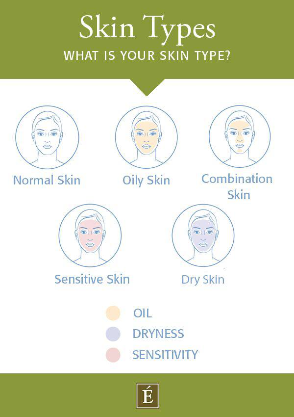
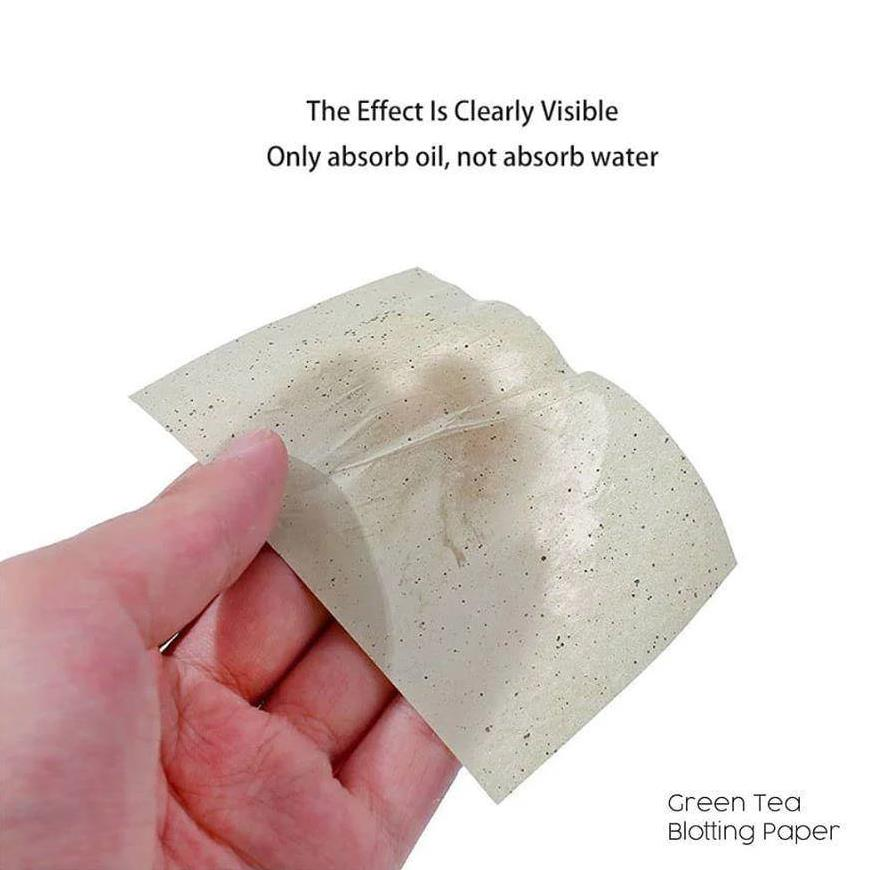

What type of skin do I have?
All skin types can benefit from daily cleansing and moisturizing, but different skin types—which include oily, dry, normal, combination, and sensitive skin—have different needs. That’s why understanding your skin type is the first step in properly caring for it. But how do you know what type of skin you have? The answer can be found through simple observation.

What you need to know
According to the American Academy of Dermatology (AAD), there are five primary types of skin: oily, dry, normal, combination, and sensitive. Each skin type has its own set of unique characteristics and needs that can affect the look and feel of your complexion.
- Oily skin : produces an excess of sebum that causes the skin to appear shiny and feel greasy especially throughout the T-zone (forehead, nose, and chin).
- Dry skin : generally produces less natural oils than other types of skin. This may cause it to appear dull and become rough , flaky , or even scaly.
- Normal skin : is balanced feeling neither too dry nor too oily. It is not prone to breakouts , flakiness, or feeling greasy or tight. People with normal skin typically have pores that are small, a smooth skin texture, and are less prone to sensitivity or blemishes.
- Combination skin : includes areas that are dry as well as oily with the T-zone commonly being oily, and the cheeks being either dry or normal. This skin type can vary during different seasons of the year, and due to various factors, such as stress or hormone fluctuation.
- Sensitive skin : is often referred to as a skin type, but it’s possible to have oily sensitive skin, dry sensitive skin, or normal sensitive skin. Regardless of which type of skin you have, if you have sensitive skin, it may appear red and feel like it's burning, itching, or dry.
How Can I Identify My Skin Type at Home?
If descriptions of the different skin types didn't help you come to a conclusion, there are multiple tests you can perform at home to help you determine your skin type. Here are two methods you can use:
The “watch and wait” method This at-home test allows you to understand your skin type by observing how your skin behaves after cleansing.
The “watch and wait” method:
- To start, wash your face with a gentle cleanser, then gently pat it dry.
- Wait 30 minutes.
- If your skin appears shiny throughout, you likely have oily skin.
- If it feels tight and is flaky or scaly, you likely have dry skin.
- If the shine is only in your T-zone, you probably have combination skin.
- If your skin feels hydrated and comfortable, but not oily, you likely have normal skin.
The blotting sheet method:
- After washing your face with a gentle cleanser, pat it dry and wait for 30 minutes.
- Press blotting sheets to various areas of your face, then hold the sheets up to the light to see the oil markings.
- If the sheets soaked up an abundance of oil from all areas of the face, you have oily skin.
- If they absorb little to no oil, then you probably have dry skin.
- If the sheets show only a small amount of oil from your T-zone, you have combination skin.
- If you only see minimal oil from every area of your face, you most likely have normal skin.